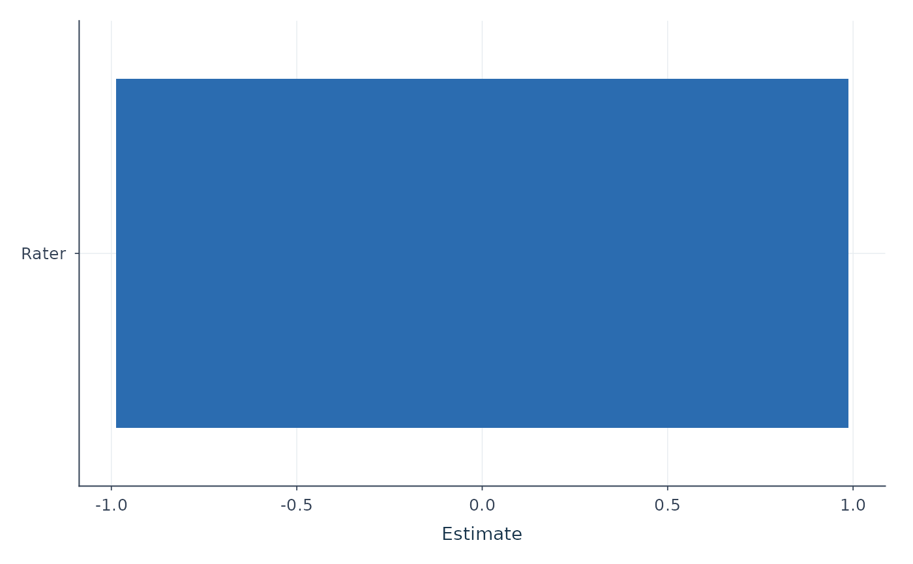
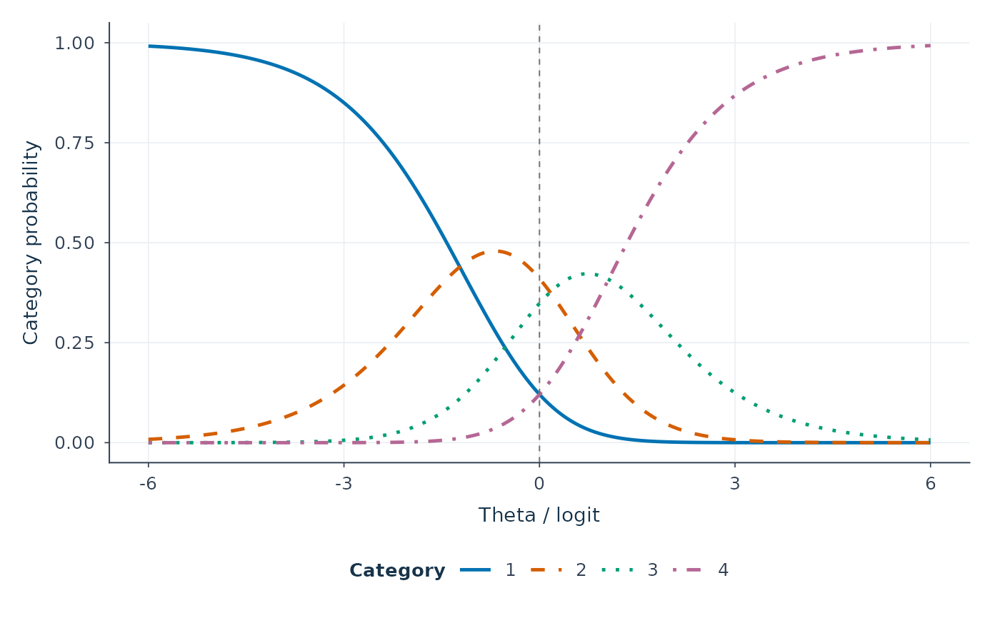

Plot fitted MFRM results with ggplot2
Source:R/api-plotting-fit-family.R, R/help_visual_diagnostics.R
plot.mfrm_fit.RdRender a Wright map, pathway map, category probability curves (CCC), or
consolidated diagnostic/comparison view from a fitted fit_mfrm() object.
Invisibly returns a ggplot object carrying underlying tables and notes via
plot_data() and plot_data_components().
Usage
# S3 method for class 'mfrm_fit'
plot(
x,
type = NULL,
facet = NULL,
top_n = 30,
theta_range = c(-6, 6),
theta_points = 241,
title = NULL,
palette = NULL,
label_angle = 45,
show_ci = NULL,
ci_level = 0.95,
group = NULL,
diagnostics = NULL,
include_fit_measures = TRUE,
fit_stat = c("Infit", "Outfit"),
fit_scale = c("mnsq", "zstd"),
zstd_method = c("facets", "engine"),
include_person = FALSE,
person_subset = NULL,
top_n_person = 30,
person_labels = c("flagged", "all", "none"),
facet_labels = c("all", "flagged", "none"),
panel = c("combined", "facet"),
fit_range = c(0.5, 1.5),
zstd_cut = 2,
draw = TRUE,
preset = c("standard", "publication", "compact", "monochrome"),
renderer = NULL,
wright_style = c("native", "facets_style"),
category_labels = NULL,
rows_per_logit = 2L,
wright_range = NULL,
extreme_placement = c("ends", "estimate"),
persons_per_star = NULL,
show_title = FALSE,
show_notes = FALSE,
marginal = c("auto", "histogram", "none"),
...,
level = NULL,
view = NULL,
metric = NULL,
comparison = NULL,
labels = NULL,
highlight = NULL
)Arguments
- x
An
mfrm_fitobject fromfit_mfrm().- type
NULL/"wright"(primary Wright map),"bundle"/"all"/"default"(Wright + pathway + CCC composite),"facet","person","step","pathway","fit_pathway","ccc","ccc_surface"/"category_surface","trajectory", or a consolidated diagnostic route ("person_fit","rater_severity","thresholds","reliability","agreement","guttman","residual_matrix","residual_qq","residual_pca","local_dependence","bubble","marginal_fit","marginal_pairwise","fair_average","displacement","unexpected","facets_chisq","qc","facet_dashboard","facet_equivalence","bias","shrinkage","apa_summary"; corrected JML supports"slopes","locations", and"steps").- facet
Optional facet name for
type = "facet"or location views.- top_n
Maximum non-Person facet levels retained on compact native Wright maps (
30default;Infkeeps all; steps are retained separately) and optional named list (e.g.,list(Rater = "R01")) prefixing selected labels with>.- theta_range
Ability grid bounds (
c(-6, 6)) and node count for pathway, CCC, and surface views.- theta_points
Ability grid bounds (
c(-6, 6)) and node count for pathway, CCC, and surface views.- title
Optional title metadata, palette overrides, and x-axis label angle.
- palette
Optional title metadata, palette overrides, and x-axis label angle.
- label_angle
Optional title metadata, palette overrides, and x-axis label angle.
- show_ci
Display approximate intervals when available (
NULLenables CIs on native Wright andfit_pathwayviews; supply eitherci_levelorlevel, default0.95).- ci_level
Display approximate intervals when available (
NULLenables CIs on native Wright andfit_pathwayviews; supply eitherci_levelorlevel, default0.95).- group
Optional Person grouping column name (in
group_dataorfit$prep$data) or aligned vector overlaying descriptive Person KDE curves on native Wright maps (density_bw = "nrd0",density_adjust = 1via...;>= 5non-constant included Persons required for a curve; inspectplot_data(p, "group_density")).- diagnostics
Optional matching
diagnose_mfrm()object and logical (TRUEdefault) attaching fit-measure tables to pathway payloads.- include_fit_measures
Optional matching
diagnose_mfrm()object and logical (TRUEdefault) attaching fit-measure tables to pathway payloads.- fit_stat
Controls for
type = "fit_pathway":"Infit"/"Outfit","mnsq"/"zstd", ZSTD df convention ("facets"or"engine"), Person inclusion/subset/ranking, label policies ("flagged","all","none"), panel layout ("combined"or"facet"), and heuristic review lines.- fit_scale
Controls for
type = "fit_pathway":"Infit"/"Outfit","mnsq"/"zstd", ZSTD df convention ("facets"or"engine"), Person inclusion/subset/ranking, label policies ("flagged","all","none"), panel layout ("combined"or"facet"), and heuristic review lines.- zstd_method
Controls for
type = "fit_pathway":"Infit"/"Outfit","mnsq"/"zstd", ZSTD df convention ("facets"or"engine"), Person inclusion/subset/ranking, label policies ("flagged","all","none"), panel layout ("combined"or"facet"), and heuristic review lines.- include_person
Controls for
type = "fit_pathway":"Infit"/"Outfit","mnsq"/"zstd", ZSTD df convention ("facets"or"engine"), Person inclusion/subset/ranking, label policies ("flagged","all","none"), panel layout ("combined"or"facet"), and heuristic review lines.- person_subset
Controls for
type = "fit_pathway":"Infit"/"Outfit","mnsq"/"zstd", ZSTD df convention ("facets"or"engine"), Person inclusion/subset/ranking, label policies ("flagged","all","none"), panel layout ("combined"or"facet"), and heuristic review lines.- top_n_person
Controls for
type = "fit_pathway":"Infit"/"Outfit","mnsq"/"zstd", ZSTD df convention ("facets"or"engine"), Person inclusion/subset/ranking, label policies ("flagged","all","none"), panel layout ("combined"or"facet"), and heuristic review lines.- person_labels
Controls for
type = "fit_pathway":"Infit"/"Outfit","mnsq"/"zstd", ZSTD df convention ("facets"or"engine"), Person inclusion/subset/ranking, label policies ("flagged","all","none"), panel layout ("combined"or"facet"), and heuristic review lines.- facet_labels
Controls for
type = "fit_pathway":"Infit"/"Outfit","mnsq"/"zstd", ZSTD df convention ("facets"or"engine"), Person inclusion/subset/ranking, label policies ("flagged","all","none"), panel layout ("combined"or"facet"), and heuristic review lines.- panel
Controls for
type = "fit_pathway":"Infit"/"Outfit","mnsq"/"zstd", ZSTD df convention ("facets"or"engine"), Person inclusion/subset/ranking, label policies ("flagged","all","none"), panel layout ("combined"or"facet"), and heuristic review lines.- fit_range
Controls for
type = "fit_pathway":"Infit"/"Outfit","mnsq"/"zstd", ZSTD df convention ("facets"or"engine"), Person inclusion/subset/ranking, label policies ("flagged","all","none"), panel layout ("combined"or"facet"), and heuristic review lines.- zstd_cut
Controls for
type = "fit_pathway":"Infit"/"Outfit","mnsq"/"zstd", ZSTD df convention ("facets"or"engine"), Person inclusion/subset/ranking, label policies ("flagged","all","none"), panel layout ("combined"or"facet"), and heuristic review lines.- draw
Print device toggle (
TRUEdefault), visual preset ("standard","publication","compact","monochrome"), title/footnote canvas switches (FALSEdefaults), and 2D scatterplot marginal histogram mode ("auto","histogram","none").- preset
Print device toggle (
TRUEdefault), visual preset ("standard","publication","compact","monochrome"), title/footnote canvas switches (FALSEdefaults), and 2D scatterplot marginal histogram mode ("auto","histogram","none").- renderer
Wright-map renderer (
"native"or"facets"/wright_style = "facets_style"for FACETS Table 6 text-ruler layout) and ruler formatting controls.- wright_style
Wright-map renderer (
"native"or"facets"/wright_style = "facets_style"for FACETS Table 6 text-ruler layout) and ruler formatting controls.- category_labels
Wright-map renderer (
"native"or"facets"/wright_style = "facets_style"for FACETS Table 6 text-ruler layout) and ruler formatting controls.- rows_per_logit
Wright-map renderer (
"native"or"facets"/wright_style = "facets_style"for FACETS Table 6 text-ruler layout) and ruler formatting controls.- wright_range
Wright-map renderer (
"native"or"facets"/wright_style = "facets_style"for FACETS Table 6 text-ruler layout) and ruler formatting controls.- extreme_placement
Wright-map renderer (
"native"or"facets"/wright_style = "facets_style"for FACETS Table 6 text-ruler layout) and ruler formatting controls.- persons_per_star
Wright-map renderer (
"native"or"facets"/wright_style = "facets_style"for FACETS Table 6 text-ruler layout) and ruler formatting controls.- show_title
Print device toggle (
TRUEdefault), visual preset ("standard","publication","compact","monochrome"), title/footnote canvas switches (FALSEdefaults), and 2D scatterplot marginal histogram mode ("auto","histogram","none").- show_notes
Print device toggle (
TRUEdefault), visual preset ("standard","publication","compact","monochrome"), title/footnote canvas switches (FALSEdefaults), and 2D scatterplot marginal histogram mode ("auto","histogram","none").- marginal
Print device toggle (
TRUEdefault), visual preset ("standard","publication","compact","monochrome"), title/footnote canvas switches (FALSEdefaults), and 2D scatterplot marginal histogram mode ("auto","histogram","none").- ...
Display variant (
view), target quantity (metric), paired/trajectory comparison fit(s) and wavelabels(scales must already be linked), and route-specific controls.- level
Display approximate intervals when available (
NULLenables CIs on native Wright andfit_pathwayviews; supply eitherci_levelorlevel, default0.95).- view
Display variant (
view), target quantity (metric), paired/trajectory comparison fit(s) and wavelabels(scales must already be linked), and route-specific controls.- metric
Display variant (
view), target quantity (metric), paired/trajectory comparison fit(s) and wavelabels(scales must already be linked), and route-specific controls.- comparison
Display variant (
view), target quantity (metric), paired/trajectory comparison fit(s) and wavelabels(scales must already be linked), and route-specific controls.- labels
Display variant (
view), target quantity (metric), paired/trajectory comparison fit(s) and wavelabels(scales must already be linked), and route-specific controls.- highlight
Maximum non-Person facet levels retained on compact native Wright maps (
30default;Infkeeps all; steps are retained separately) and optional named list (e.g.,list(Rater = "R01")) prefixing selected labels with>.
Value
Invisibly, a ggplot object carrying locations, notes,
display, retention, fit_readiness, interpretation_status, and
scale_contract accessible via plot_data().
Details
Scale, conditioning, and display payloads. Higher Person locations raise
expected coded scores; under default negative facet orientation, higher
non-Person locations indicate greater severity/difficulty (positive_facets
reverses sign). Pathway and CCC curves hold non-target additive facets and
interactions at zero (curve_basis). Boundary-clipped coordinates record
OriginalEstimate separately from DisplayEstimate, and blocked-fit extreme
MML EAPs are recorded in person_exclusions.
Visual diagnostics map, presets, and missing-interval states
| Question | Primary plot() route |
| Shared logit targeting of Persons, facets, and steps | plot(fit, type = "wright") |
| Expected scores and category probability curves |
plot(fit, type = "pathway") or type = "ccc"
|
| Model-fit overview and response screens |
plot(fit, type = "qc"), "unexpected", "displacement", "marginal_fit"
|
| Inter-rater score agreement vs residual structure |
plot(fit, type = "agreement"), "residual_pca", "local_dependence", "bias"
|
| Connectedness, anchor drift, or group DFF |
plot(result) on subset_connectivity_report(), detect_anchor_drift(), or analyze_dff()
|
Session defaults and editing. Set options(mfrmr.plot_preset = "publication") ("standard", "publication", "compact", or
"monochrome") for a session preset; explicit preset overrides the option
and preset = NULL uses "standard". Every plot() method returns a
ggplot invisibly (draw = FALSE suppresses device drawing). Titles and
explanatory notes stay outside the canvas by default (show_title = FALSE,
show_notes = FALSE) and remain accessible via plot_data(p, "title") and
plot_data(p, "notes").
Missing estimates and intervals. Retain rows with NA bounds alongside
their Status, CIEligible, CoverageQualified, and InferenceReview
fields: fixed marks constraint-pinned coordinates, prior_only marks
Persons without observed responses, and CoverageQualified = FALSE records
unestablished finite-sample nominal coverage rather than numerical failure.
See vignette("mfrmr-visual-diagnostics", package = "mfrmr").
Examples
library(mfrmr)
# Saved synthetic MML/RSM analysis of example_operational.
# For your own data, fit a model first; see ?fit_mfrm.
example_fit <- readRDS(system.file("examples", "operational-mml.rds", package = "mfrmr"))
fit <- example_fit$fit
# Run each plot command separately to inspect its figure
plot(fit) # Wright map: persons, facets, and category thresholds
 # Rater severity estimates (higher means more severe in this example)
plot(fit, type = "facet", facet = "Rater")
# Rater severity estimates (higher means more severe in this example)
plot(fit, type = "facet", facet = "Rater")

# Probability of each score category across the ability scale
plot(fit, type = "ccc")

# Optional: get plot without printing and inspect underlying tables
wright <- plot(fit, draw = FALSE)
head(plot_data(wright, "locations"))
#> # A tibble: 6 × 39
#> Group Label PlotType Estimate SE Fixed CI_Level SE_Method PrecisionTier
#> <fct> <chr> <chr> <dbl> <dbl> <lgl> <dbl> <chr> <chr>
#> 1 Rater R01 Facet level -0.606 0.181 FALSE 0.95 Observati… exploratory
#> 2 Rater R02 Facet level -0.382 0.166 FALSE 0.95 Observati… exploratory
#> 3 Rater R04 Facet level 0.180 0.185 FALSE 0.95 Observati… exploratory
#> 4 Rater R05 Facet level 0.184 0.199 FALSE 0.95 Observati… exploratory
#> 5 Rater R03 Facet level 0.212 0.179 FALSE 0.95 Observati… exploratory
#> 6 Rater R06 Facet level 0.412 0.219 FALSE 0.95 Observati… exploratory
#> # ℹ 30 more variables: SupportsFormalInference <lgl>, SEUse <chr>,
#> # CIBasis <chr>, CIUse <chr>, CIEligible <lgl>, CILabel <chr>,
#> # Measure_Source <chr>, CI_Lower <dbl>, CI_Upper <dbl>, Step <chr>,
#> # StepIndex <int>, BoundarySeparated <lgl>, Highlighted <lgl>, XBase <dbl>,
#> # X <dbl>, OriginalEstimate <dbl>, BelowRange <lgl>, AboveRange <lgl>,
#> # DisplayEstimate <dbl>, DisplayLabel <chr>, OriginalCI_Lower <dbl>,
#> # OriginalCI_Upper <dbl>, DisplayCI_Lower <dbl>, DisplayCI_Upper <dbl>, …
# Find a named judge without refitting or dropping the surrounding scale
judge <- subset(plot_data(wright, "locations"), Group == "Rater")$Label[1]
focused <- plot(fit, highlight = list(Rater = judge), draw = FALSE)
subset(plot_data(focused, "locations"), Highlighted)
#> # A tibble: 1 × 39
#> Group Label PlotType Estimate SE Fixed CI_Level SE_Method PrecisionTier
#> <fct> <chr> <chr> <dbl> <dbl> <lgl> <dbl> <chr> <chr>
#> 1 Rater R01 Facet level -0.606 0.181 FALSE 0.95 Observati… exploratory
#> # ℹ 30 more variables: SupportsFormalInference <lgl>, SEUse <chr>,
#> # CIBasis <chr>, CIUse <chr>, CIEligible <lgl>, CILabel <chr>,
#> # Measure_Source <chr>, CI_Lower <dbl>, CI_Upper <dbl>, Step <chr>,
#> # StepIndex <int>, BoundarySeparated <lgl>, Highlighted <lgl>, XBase <dbl>,
#> # X <dbl>, OriginalEstimate <dbl>, BelowRange <lgl>, AboveRange <lgl>,
#> # DisplayEstimate <dbl>, DisplayLabel <chr>, OriginalCI_Lower <dbl>,
#> # OriginalCI_Upper <dbl>, DisplayCI_Lower <dbl>, DisplayCI_Upper <dbl>, …
if (FALSE) { # \dontrun{
# Requires your own file with Person IDs matching the fitted data.
groups <- read.csv("person-groups.csv") # columns: Person, Cohort
grouped <- plot(fit, group = "Cohort", group_data = groups, draw = FALSE)
plot_data(grouped, "group_density")$summary
# Sensitivity to smoothing, keeping the fitted model unchanged:
plot(fit, group = "Cohort", group_data = groups, density_adjust = 1.5)
} # }